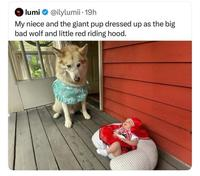

0

0


Bay Area homeowner and investment banker Storm Duncan is trying to swap a 13-acre Mill Valley property for Anthropic equity instead of cash. He created a LinkedIn page for the home, describing the move as a "diversification play" because he is "under-concentrated in AI investments relative to the importance of AI in the future, and over-concentrated in real estate." A young Anthropic employee, Duncan says, might be "in the exact opposite scenario." TechCrunch reports: Duncan is asking potential buyers to email him to discuss deal specifics, but he said it would be a private transaction that doesn't require the buyer to sell their stock outright. On LinkedIn, he also said the homebuyer would "continue to retain 20% of the upside value of the shares exchanged for the duration of the lockup period."
Duncan, who described himself as a longtime Bay Area resident who moved to Miami during the pandemic, bought the property in 2019 for $4.75 million. It's currently occupied by "a high-profile VC," he said, but he declined to identify the VC.
Read more of this story at Slashdot.
An anonymous reader quotes a report from NPR: A divided U.S. Supreme Court on Monday heard a dispute over labels on the popular Roundup weed killer, which thousands of people blame for their cancers. How the Supreme Court rules could have implications for tens of thousands of lawsuits against Roundup maker Monsanto, which is now owned by Bayer. The case centers on who decides about warning labels on chemicals: the federal government -- or states or juries. [...] The justices will not be evaluating whether glyphosate causes cancer. Rather, they'll consider who should decide what appears on warning labels and whether states have a role to play after the EPA weighs in.
The current U.S. solicitor general backed Monsanto. Sarah Harris, his principal deputy, said the Environmental Protection Agency is in the driver's seat, not anyone in Missouri. "Missouri thus requires adding cancer warnings but federal law requires EPA to approve new warnings and tasks EPA with deciding what label changes would mitigate any health risks," Harris argued. "State law must give way." Several justices, including Brett Kavanaugh, appeared to agree with Monsanto's argument about the need for a single, uniform standard across the country.
But others, like Chief Justice John Roberts, wondered what would happen if the federal government moved more slowly than states did, who wanted to act quickly on information about new dangers. "Well, it does undermine the uniformity," Roberts said. "On the other hand, if it turns out they were right, it might have been good if they had an opportunity to do something, to call this danger to the attention of people while the federal government was going through its process," he said about states.
Justice Ketanji Brown Jackson asked about the emergence of new science, and the EPA's reviews. "There's a 15-year window between when that product has to be re-registered again and lots of things can happen in science, in terms of development about the product," she said. Bayer, which now owns Monsanto, only sells Roundup that contains glyphosate to farmers and businesses these days. Bayer has been pushing to resolve scores of the residential cases through a sweeping settlement, trying to put the costly claims behind it.
Read more of this story at Slashdot.
An anonymous reader quotes a report from the Associated Press: Technology tycoons Elon Musk and Sam Altman are poised to face off in a high-stakes trial revolving around the alleged betrayal, deceit and unbridled ambition that blurred the bickering billionaires' once-shared vision for the development of artificial intelligence. The trial, which started Monday with jury selection, centers on the 2015 birth of ChatGPT maker OpenAI as a nonprofit startup primarily funded by Musk before evolving into a capitalistic venture now valued at $852 billion. The trial's outcome could sway the balance of power in AI -- breakthrough technology that is increasingly being feared as a potential job killer and an existential threat to humanity's survival. Those perceived risks are among the reasons that Musk, the world's richest person, cites for filing an August 2024 lawsuit that will now be decided by a jury and U.S. District Judge Yvonne Gonzalez Rogers in Oakland, California.
The civil lawsuit accuses Altman, OpenAI's CEO, and his top lieutenant, Greg Brockman, of double-crossing Musk by straying from the San Francisco company's founding mission to be an altruistic steward of a revolutionary technology. The lawsuit alleges they shifted into a moneymaking mode behind his back. OpenAI has brushed off Musk's allegations as an unfounded case of sour grapes that's aimed at undercutting its rapid growth and bolstering Musk's own xAI, which he launched in 2023 as a competitor. Gonzalez Rogers questioned potential jurors Monday about their views on Musk, Altman and artificial intelligence. Some jurors said they had negative views of Musk, but most said they would still be able to treat him fairly and focus on the facts of the case. [...] "Part of this is about whether a jury believes the people who will testify and whether they are credible," Gonzalez Rogers said during a court hearing earlier this year while explaining why she believe the case merited a trial. The judge will make the final decision on the case, with the jury serving in an advisory role. The latest development is that a jury has been seated. During selection, several prospective jurors expressed negative views of Elon Musk, but Judge Yvonne Gonzalez Rogers rejected attempts by Musk's lawyer to remove some of them solely on that basis, saying dislike of Musk does not automatically mean someone can't be fair.
The court is selecting nine jurors, and the case is expected to wrap by May 21, when it would go to the jury. Tomorrow, April 28th, will feature opening statements.
Read more of this story at Slashdot.
alternative_right shares a report from 404 Media: Researchers working with data from the Internet Archive have discovered that a third of websites created since 2022 are AI-generated. The team of researchers -- which includes people from Stanford, the Imperial College London, and the Internet Archive -- published their findings online in a paper titled "The Impact of AI-Generated Text on the Internet." The research also found that all this AI-generated text is making the web more cheery and less verbose."The proliferation of AI-generated and AI-assisted text on the internet is feared to contribute to a degradation in semantic and stylistic diversity, factual accuracy, and other negative developments," the researchers write in the paper. "We find that by mid-2025, roughly 35% of newly published websites were classified as AI-generated or AI-assisted, up from zero before ChatGPT's launch in late 2022."
"I find the sheer speed of the AI takeover of the web quite staggering," Jonas Dolezal, an AI researcher at Stanford and co-author of the paper, told 404 Media. "After decades of humans shaping it, a significant portion of the internet has become defined by AI in just three years. We're witnessing, in my opinion, a major transformation of the digital landscape in a fraction of the time it took to build in the first place."
Maty Bohacek, a student researcher at Stanford and one of the co-authors of the paper, added: "As AI-generated content spreads, the challenge is finding a role for these models that doesn't just result in a sanitized, repetitive web," he said. "Rather than forcing models to be perfectly compliant and agreeable, allowing them to have a more distinct personality or 'friction' might help them act as a creative partner rather than a replacement for human voice."
Read more of this story at Slashdot.
An anonymous reader quotes a report from Ars Technica: In January, the European Commission began an initial investigation, known as a specification proceeding, into how Google has implemented AI in the Android operating system. The results are in, and the EU says Android needs to be more open, which is not surprising. Meanwhile, Google says this amounts to "unwarranted intervention," which is equally unsurprising. Regardless of Google's characterization of the investigation, the commission may force Google to make Android AI changes this summer. This action stems from the continent's Digital Markets Act (DMA), a sweeping law that designates seven dominant technology companies as "gatekeepers" that are subject to greater regulation to ensure fair competition. Google has consistently spoken against the regulations imposed under the DMA, but it and the other gatekeepers have been subject to the law for several years now, and there's little chance the commission backs away from it.
The issue before the commission currently is the built-in advantage for Gemini on Android. When you turn on any Google-powered Android phone, Gemini is already there and gets special treatment at the system level. The European Commission is taking aim at the lack of features available to third-party AI services. The commission believes that there are too many experiences on Android that only work with Google's Gemini AI, and as a gatekeeper, Google must change that. "As we navigate the rapidly evolving landscape of AI, it is clear that interoperability is key to unlocking the full potential of these technologies," said Commission VP for Tech Sovereignty Henna Virkkunen in a statement. "These measures will open up Android devices to a wider range of AI services, so that users will have the freedom to choose the AI services that best meet their needs and values, without sacrificing functionality."
The commission does have a solid track record pushing for openness so far. Since the DMA came into force, Google has been required to make numerous changes to its business in Europe, like implementing search choice screens on Android, allowing alternative payment methods in the Play Store, and limiting data sharing across services. Now, the EU wants Google to make the Android platform more hospitable to third-party AI services. Google's objection focuses on preserving the autonomy for device makers (including Google) to customize AI services. "This unwarranted intervention would strip away that autonomy, mandate access to sensitive hardware and device permissions; unnecessarily driving up costs while undermining critical privacy and security protections for European users," said Google senior competition counsel Claire Kelly. The problem isn't that you can't install ChatGPT or Grok; it's that these chatbots don't have the same access to data and features as Gemini.
To address that imbalance, the EU is considering several requirements that would force Google to give third-party AI assistants deeper access to Android, closer to what Gemini currently enjoys. The proposed requirements include:
- Letting alternative AI tools be launched system-wide through hot words, gestures, or button presses.
- Allowing third-party assistants to see screen context when users invoke them.
- Giving non-Gemini AI tools access to local device data, with user permission, so they can generate proactive suggestions, summaries, and contextual help.
- Allowing other AI services to control installed apps and Android system features on the user's behalf.
- Ensuring third-party developers can access the necessary device hardware to run local AI models with strong performance, availability, and responsiveness.
- Requiring Google to create APIs that let outside AI providers plug into Android more deeply.
- Requiring Google to provide technical assistance to those AI providers.
- Making those APIs and support available free of charge.
Read more of this story at Slashdot.
BrianFagioli writes: Notepad++ has finally made its way to macOS, and this time it is not through a compatibility layer. A new community-driven port brings the long-standing Windows text editor over as a fully native Mac application, built with Cocoa and compiled for both Apple Silicon and Intel systems. Instead of relying on Wine or similar tools, the project replaces the Windows-specific interface with a macOS-native one while keeping the core editing engine intact, allowing longtime users to retain the same workflow, shortcuts, and overall feel.
The port is independent from the original Notepad++ project but tracks upstream changes closely, with development happening in the open. It is code-signed and notarized, and notably avoids telemetry or ads. Plugin support is being rebuilt for macOS and is still evolving, but the groundwork is in place. While macOS already has several established editors, this effort is aimed squarely at users who want the familiar Notepad++ experience without relearning a new tool. You can download the app here.
Read more of this story at Slashdot.
China has blocked Meta's planned $2 billion acquisition of AI startup Manus, ordering the deal withdrawn after months of scrutiny from both Beijing and Washington. "The decision to prohibit foreign investment in Manus was made in accordance with laws and regulations," reports CNBC, citing the National Development and Reform Commission. "It added that it has asked the parties involved to withdraw the acquisition transaction." From the report: The deal had attracted scrutiny from both China and Washington, as lawmakers in the U.S. have prohibited American investors from backing Chinese AI companies directly. Meanwhile, Beijing has increased efforts to discourage Chinese AI founders from moving business offshore. The Chinese government's intervention in the transaction drew alarm among tech founders and venture capitalists in the country who were hoping to take advantage of the so-called Singapore-washing model, where companies relocate from China to the city-state to avoid scrutiny from Beijing and Washington.
Manus was founded in China before relocating to Singapore. The company develops general purpose AI agents and launched its first general AI agent in March last year, which can execute complex tasks such as market research, coding and data analysis. The release saw the startup lauded as the next DeepSeek. Manus said it had passed $100 million in annual recurring revenue, or ARR, in December, eight months on from launching a product, which it claimed made it the fastest startup in the world at the time to hit the milestone from $0. The company raised $75 million in a round led by U.S. VC Benchmark in April last year.
Read more of this story at Slashdot.
GitHub said in a blog post today that it is moving Copilot to usage-based billing starting June 1. Base subscription prices will remain the same but premium requests will be replaced with monthly AI Credits that are consumed based on token usage.
"Instead of counting premium requests, every Copilot plan will include a monthly allotment of GitHub AI Credits, with the option for paid plans to purchase additional usage," the platform said. "Usage will be calculated based on token consumption, including input, output, and cached tokens, using the listed API rates for each model. This change aligns Copilot pricing with actual usage and is an important step toward a sustainable, reliable Copilot business and experience for all users."
Documentation for individuals, businesses and enterprises, and an FAQ can be found at their respective links.
Read more of this story at Slashdot.
Bloomberg reports that Microsoft is ending revenue-sharing payments to OpenAI (paywalled; alternative source) and making the partnership non-exclusive. "The rapid pace of innovation requires us to continue to evolve our partnership to benefit our customers and both companies," Microsoft said Monday in a blog post. Bloomberg reports: The revised deal is meant to simplify a complicated relationship between two partners that has been foundational to OpenAI's rise and the broader AI boom. OpenAI has since pursued partnerships with multiple cloud providers, including Microsoft rival Amazon.com Inc., to meet its growing computing needs to build and service AI software to a wider audience. As part of OpenAI's restructuring last year as a for-profit business, Microsoft received a 27% ownership stake in the AI startup.
Read more of this story at Slashdot.
An anonymous reader quotes a report from VentureBeat: The whale has resurfaced. DeepSeek, the Chinese AI startup offshoot of High-Flyer Capital Management quantitative analysis firm, became a near-overnight sensation globally in January 2025 with the release of its open source R1 model that matched proprietary U.S. giants. It's been an epoch in AI since then, and while DeepSeek has released several updates to that model and its other V3 series, the international AI and business community has been largely waiting with baited breath for the follow-up to the R1 moment.
Now it's arrived with last night's release of DeepSeek-V4, a 1.6-trillion-parameter Mixture-of-Experts (MoE) model available free under commercially-friendly open source MIT License, which nears -- and on some benchmarks, surpasses -- the performance of the world's most advanced closed-source systems at approximately 1/6th the cost over the application programming interface (API).
This release -- which DeepSeek AI researcher Deli Chen described on X as a "labor of love" 484 days after the launch of V3 -- is being hailed as the "second DeepSeek moment." As Chen noted in his post, "AGI belongs to everyone". It's available now on AI code sharing community Hugging Face and through DeepSeek's API. The new DeepSeek-V4-Pro model delivers "near-frontier performance" at a much lower price, costing $5.22 for 1 million input and 1 million output tokens compared with $35 for GPT-5.5 and $30 for Claude Opus 4.7. That makes it roughly 1/7th the cost of GPT-5.5 and 1/6th the cost of Claude Opus 4.7, reinforcing VentureBeat's point that DeepSeek is "compressing advanced model economics into a much lower band."
While GPT-5.5 and Claude Opus 4.7 still lead on most benchmarks, DeepSeek-V4-Pro gets close enough that its lower cost could "force a major rethink of the economics of advanced AI deployment."
Read more of this story at Slashdot.
fjo3 writes: The United Arab Emirates announced Tuesday that it would exit the Organization of the Petroleum Exporting Countries (source paywalled; alternative source), or OPEC, along with the wider group of partners known as OPEC+, effective May 1, in what could be a blow to control over prices by the group, long led in practice by Saudi Arabia. The move "reflects the UAE's long-term strategic and economic vision and evolving energy profile" read an official statement carried by a UAE state news agency, as disruptions "in the Strait of Hormuz continues to affect supply dynamics."
[...] The UAE is the second Persian Gulf country to leave the group after Qatar terminated its membership in 2019. The UAE has been a member of OPEC since 1971. The latest departure leaves in place 11 core members: Algeria, Congo, Equatorial Guinea, Gabon, Iran, Iraq, Kuwait, Libya, Nigeria, Saudi Arabia and Venezuela.
Read more of this story at Slashdot.
Researchers say infrasound -- low-frequency vibrations from things like pipes, HVAC systems, and traffic that humans can't consciously hear -- may help explain why some old buildings feel unsettling or "haunted." Rodney Schmaltz, senior author and professor at MacEwan, says: "Consider visiting a supposedly haunted building. Your mood shifts, you feel agitated, but you can't see or hear anything unusual. In an old building, there is a good chance that infrasound is present, particularly in basements where aging pipes and ventilation systems produce low-frequency vibrations. If you were told the building was haunted, you might attribute that agitation to something supernatural. In reality, you may simply have been exposed to infrasound." ScienceBlog.com reports: Infrasound sits below roughly 20 Hz, the lower limit of what the human ear can ordinarily detect. It's generated by storms, by volcanic activity, by tectonic rumblings deep in the Earth's crust, and (this is the part that matters) by the mundane mechanical heartbeat of cities: ageing pipes, HVAC systems, traffic, industrial machinery. "Infrasound is pervasive in everyday environments, appearing near ventilation systems, traffic, and industrial machinery," says Schmaltz. Most of the time, we walk through it without a second thought. The question the team wanted to answer was whether walking through it was actually doing something to us, whether the frequency was registered somewhere below consciousness, somewhere we couldn't readily name.
The experimental setup was deliberately ordinary. Thirty-six undergraduate students filed one at a time into isolated testing rooms and sat alone with a piece of music, either a calming instrumental or a horror-themed ambient track designed to provoke discomfort. Hidden subwoofers, including a 12-inch unit positioned in an adjacent hallway and a 16-inch speaker oriented toward the ceiling in a neighboring room, pumped infrasound at approximately 18 Hz into half those spaces. The participants had no idea. That last point turned out to be rather important. When the team ran the numbers, they found that participants couldn't reliably identify whether infrasound had been present. Their guesses were, statistically speaking, no better than chance. And according to Schmaltz, participants' beliefs about whether the infrasound was on had no detectable effect on their cortisol or mood. The physiological response didn't care what the participants thought was happening. It just happened anyway.
What happened, specifically, was this: those exposed to infrasound reported higher irritability, lower interest in the music, and a tendency to rate the music as sadder, irrespective of whether it was the calming or the horror track. Cortisol levels, measured before and about 20 minutes after exposure, were also elevated. Kale Scatterty, the PhD student who led the work, notes that irritability and cortisol do tend to move together under ordinary stress, but adds that "infrasound exposure had effects on both outcomes that went beyond that natural relationship." That distinction matters more than it might seem. Previous theories about infrasound and paranormal experience have often leaned on anxiety as the explanatory mechanism, the idea that low-frequency sound triggers a kind of free-floating dread that the mind then reaches for supernatural explanations to account for. The new data don't really support that picture. Measures of anxiety didn't budge significantly. What went up was irritability and disinterest, a kind of sour, low-grade aversion rather than fear. That's perhaps a more honest description of how a lot of ghost stories actually feel in the telling: not screaming terror, but wrong atmosphere, a sense of unease that never quite crystallizes into something you can point at. The study has been published this week in Frontiers in Behavioral Neuroscience.
Read more of this story at Slashdot.
The Trump administration says it will reimburse energy companies $885 million to cancel two planned offshore wind farms, with the firms in turn agreeing to put money into oil and gas projects instead. "The deals are modeled after a similar agreement last month with the French energy giant TotalEnergies," notes the New York Times. "TotalEnergies forfeited its leases for two wind projects planned off the coasts of New York and North Carolina, while committing to a range of fossil-fuel investments." From the report: [...] The first new agreement affects Bluepoint Wind, a wind farm in the early stages of development off New York and New Jersey. The project was proposed by Global Infrastructure Partners, a part of asset manager BlackRock, and Ocean Winds, which is itself a joint venture between Engie and EDP Renewables, two European clean-energy firms. The second deal would cancel Golden State Wind, another early-stage venture off California's central coast. Golden State Wind is a 50-50 partnership between the developers Ocean Winds and Reventus Power.
Both Bluepoint Wind and Golden State Wind agreed not to pursue any new offshore wind projects in the United States, although that pledge would not necessarily apply to the companies behind the ventures. Ocean Winds has also been developing another giant wind farm known as SouthCoast Wind, off Martha's Vineyard, Mass., that is much further along in the planning and permitting process. That project is not affected by Monday's announcement, although it has essentially been paused since Mr. Trump took office last year. [...] It is also unclear how much the companies will actually invest in new fossil fuel infrastructure. In documents released this month, Interior revealed that it would count investments that TotalEnergies made before the deal toward its pledge, raising questions over whether the company had any obligations to make additional investments.
Read more of this story at Slashdot.
California's proposed billionaire tax appears headed for the November ballot after backers said they gathered more than 1.5 million signatures, well above the threshold needed to qualify. SF Standard reports: Backers of the initiative announced this weekend that more than 1.5 million people signed a petition to bring the one-time, 5% wealth tax to a statewide vote come November. That's well beyond the 875,000 names needed to qualify the measure, and likely sufficient to account for illegible or invalid signatures. The Service Employees International Union United Healthcare Workers West, a union representing more than 120,000 healthcare workers, pitched the tax to make up for federal spending cuts that threaten to shutter hospitals(opens in new tab) and kick millions of people off medical insurance.
Proponents of California's wealth tax estimate it would raise $100 billion in one-time revenue, even if some billionaires leave because of the measure. The nonpartisan California Legislative Analyst's Office forecasts tens of billions in upfront revenue, but cautioned that the tax could cost hundreds of millions or more a year if some billionaires move out of state. The proposal, which needs a simple majority to pass, would apply to assets of people with net worth of $1 billion or more who lived in California as of Jan. 1 this year. That means it would affect about 200 people, according to the SEIU-UHW.
Read more of this story at Slashdot.
An anonymous reader quotes a report from the New York Times: When the Call Federal Credit Union outside Richmond, Va., was robbed at gunpoint in 2019, the suspect took $195,000 from the bank's vault and fled before the police arrived. A detective interviewed witnesses and reviewed the bank's security footage. But with no leads, the officer relied on a so-called geofence warrant to sweep up location data from all the cellphones in the vicinity of the bank for the 30 minutes before and after the robbery. The data he gathered eventually led to the identification and conviction of Okello T. Chatrie, now 31, a Jamaican immigrant who came to the United States in 2017.
Geofence searches have become increasingly popular as a tool for law enforcement, but critics say they put at risk the personal data of everyday Americans and violate the Constitution. Mr. Chatrie challenged the use of a geofence warrant in his conviction, in a case that will be heard by the Supreme Court on Monday. The justices will examine how the Constitution's traditional protections apply to rapidly changing technology that has made it easier for the police to scoop up vast amounts of data to assemble a detailed look at a person's movements and activities.
It has been eight years since the court last took up a major Fourth Amendment case involving the expectations of privacy for the millions of people carrying cellphones in the digital age. In that 2018 case, the court ruled that the government generally needs a warrant to collect location data drawn from cell towers about the customers of cellphone companies. The court has also limited the government's ability to use GPS devices to track suspects' movements, and it has required that law enforcement get a warrant to search individual cellphones. In Mr. Chatrie's case, the government did obtain a warrant, but one that his legal team said was overly broad, violating Fourth Amendment protections against unreasonable searches.
Read more of this story at Slashdot.
Matt Day / Bloomberg : AWS launches Amazon Connect Decisions and Amazon Connect Talent, which are AI agentic tools aimed at logistics workers and recruiters — Amazon.com Inc.'s cloud unit, best known for providing technology infrastructure to corporations, is looking to sell AI-powered productivity software for the office.
Sarah Perez / TechCrunch : Lovable launches its AI coding app on iOS and Android, letting users code via voice or text AI prompts, and allowing them to switch between a PC and mobile — Apple's recent crackdown on vibe-coding apps hasn't held up Lovable's launch of its no-code AI app builder, which is now available …
Madlin Mekelburg / Bloomberg : Musk v. Altman: the judge asks Elon Musk and Sam Altman to “control your propensity to use social media to make things worse”, as opening statements begin — The judge overseeing a high-profile court case between Elon Musk and OpenAI has asked the tech executives involved …
Lily Hay Newman / Wired : The FIDO Alliance launches two working groups to establish industry standards for securing AI agent transactions; Google contributes the Agent Payments Protocol — AI agents may soon be buying your stuff for you. The FIDO Alliance has teamed up with Google and Mastercard to try to ensure …
Rachel Yeo / Bloomberg : Foxconn Industrial Internet, which sells AI servers, reports Q1 revenue up 57% YoY to ~$37B, below $44.5B est., and a record ~$1.5B net income, below $1.8B est. — Foxconn Industrial Internet Co. benefited less than expected from China's artificial intelligence boom as sales and earnings growth fell short of lofty expectations.
Bloomberg : Sources: Polymarket has discussed lifting the prohibition on US-based customers with the CFTC, as it seeks to bring its main exchange back to the US — Polymarket is taking steps to try to bring its main exchange back to the US, according to people familiar with the matter …
Anthropic : Anthropic partners with Blender, Autodesk, Adobe, Ableton, and others to launch connectors that integrate Claude directly into professional creative workflows — Creative professionals look to technology to expand what's possible in their work. Claude can't replace taste or imagination …
Seth Fiegerman / Bloomberg : OpenAI describes a report that it has missed internal goals as “prime clickbait” and says its consumer and enterprise businesses are “firing on all cylinders” — OpenAI pushed back against concerns over its sales growth on Tuesday, saying its consumer and enterprise businesses are …
Samantha Subin / CNBC : True Anomaly, which makes autonomous spacecraft and software for the US Space Force, raised a $650M Series D at a $2.2B valuation, bringing total funding to $1B — True Anomaly, a Colorado-based startup building space interceptors for President Donald Trump's sweeping Golden Dome project …
Aisha Malik / TechCrunch : Snap launches AI Sponsored Snaps, a conversational ad format in Snapchat's Chat tab that lets users talk to brand-specific AI agents for product recommendations — Snapchat announced on Tuesday that it's rolling out “AI Sponsored Snaps,” which will allow users to interact directly with brands' AI agents.
Jason Meisner / Chicago Tribune : US prosecutors allege Peter Stokes, a 19-year-old dual US-Estonian citizen known as Bouquet, is a Scattered Spider member; he was arrested in a Helsinki airport — The high-tech cyber hacker who goes by the online moniker “Bouquet” jetted around the world, from Dubai to Thailand to New York …
Bloomberg : Sources: at least two China-based funds that back leading AI companies have used parallel fund structures to fundraise from US investors in recent months — Chinese early stage funds are increasingly offering a fundraising structure that appeals to US investors wary of American compliance restrictions …
Juro Osawa / The Information : Sources and memos: Tencent employees used Claude Code to assist them with evaluating and fine-tuning the company's new Hy3 model to improve its performance — Chinese tech giant Tencent's latest AI model has generated positive reviews from developers. But the company probably owes some of that success to Anthropic.
Vlad Fedorov / The GitHub Blog : GitHub addresses two recent incidents and says it aims to improve reliability amid AI growth, focusing on “availability first, then capacity, then new features” — Here's what we've done—and what we're still doing—to improve our availability and reliability.
Bloomberg : Chinese billionaire Chen Tianqiao says his startup MiroMind is adding strict “firewalls” between its Chinese and US businesses, as China blocked Manus' sale — The fallout from Meta Platforms Inc.'s controversial acquisition of Manus is prompting one tech founder …